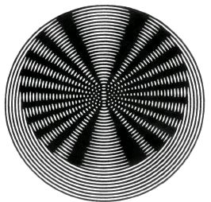

- CLD-Floppy mit Gehäuse, Netzteil und einem Laufwerk ; Alter ca. 1
1/2 Monate. Preis: DM 1.980,–
Uwe Kühn, _________ __, ____ _______
Tel.: ____/_____
- Fernschreiber Siemens T 100 S (Automatik)
Preis: DM 395,–
- Lorenz Lo 133 (Automatik)
Preis DM 395,–
- Nixdorf Drucker, 2 Druckköpfe, 330 Zeichen/sec.,
Centronicsschnittstelle 123 Zeichen Schreibbreite, Vor-Rückwärtsdruck,
interner Zeichenpuffer
Preis: nur DM 1.980,–
- Gehäuse für Nascom 1 mit 3-4 Erweiterungskarten. Platz genug für
Netzteil. Einige Buchsen sind bereits eingebaut
Preis: DM 35,–
- Superschneller Lochstreifenleser 1500 Zeichen/sec. Volle
Dokumentation
Preis: DM 980,–
M K – Systemtechnik
_______. __
____ Germersheim

Erratum zum Artikel „Umlaute“
(Nascom-Journal 5/80, S. 7):
Alpha-Shift für ÄÖÜ): Adr. #E0 ändern,
Keyboard-Table ab #62F abändern.
# = £ (kennzeichnet Hexa-Zahl).
Suche + Biete
- Spiel- und technische Berechnungsprogramme
in Assembler oder BASIC.
- Programmiere
2708
nach Muster oder Cassette
zu DM 25,–
nach Listing zu DM 35,– (incl. EPROM)
Rüdiger Maurer, ____________ _, ____ ___________ _
- Fortran für das Nascom-MKS-Floppy
- Schach / Spiele
Gerhard Baier, _________________
__ ___ ________
Tel.: _____/______
- Programme aller Art für Nascom 2
Klaus Bott, _____________ _, ____ _______
_____/_____
machen sie einen drucker aus ihrer elektrischen Schreibmaschine!!!
Unser Interface wird mit einem Handgriff von oben auf die Tastatur
aufgesetzt und ist ebenso schnell wieder abgenommen. Dadurch ist kein
Eingriff in die Maschine notwendig, und sie kann jederzeit auch ganz
normal verwendet werden.
Für den Aufhau des Interface-Bausatzes brauchen Sie einen Lötkolben und
etwa vier Stunden Zeit.
Preis: DM 390,– + Porto + MWST
Kanis GmbH,
Lindenberg 113
8134 Pöcking